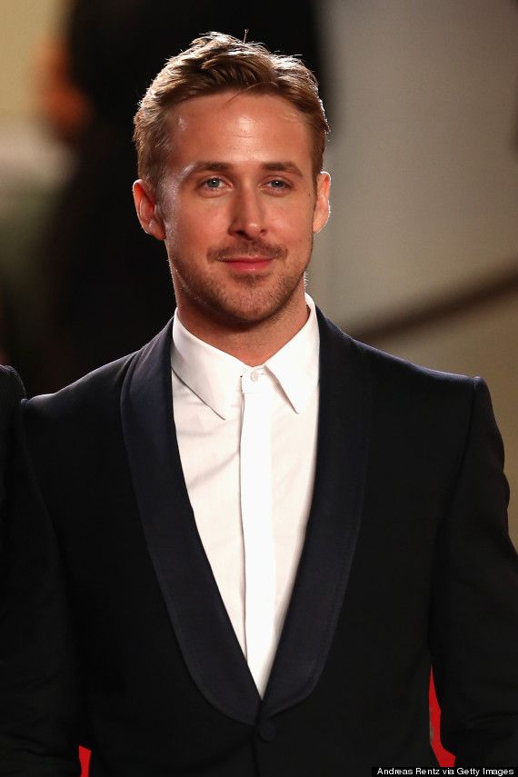
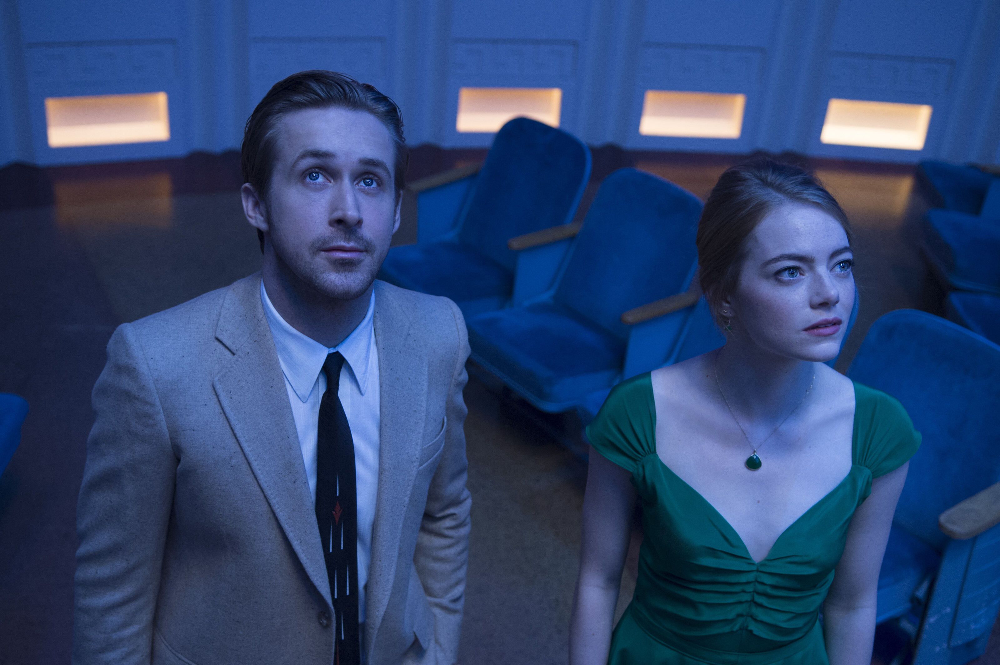

Lalaland - 19 de janeiro de 2017/ 2h 08min / Comédia Musical, Romance
Direção: Damien Chazelle
Música: Justin Hurwitz
Elenco: Ryan Gosling, Emma Stone, John Legend

Mia Dolan
Aspirante a atriz que, por mais que compareça a diversas audições, não consegue um papel.
Trabalha como barista nos estúdios Warner Bros.

Sebastian Wilder
Pianista e apaixonado por jazz, Sebastian tem dificuldades em manter um
emprego fixo e sonha em abrir um clube do gênero.

Em uma movimentada estrada de Los Angeles, Mia,
uma barista no estúdio e aspirante a atriz, cai em um momento de raiva com Sebastian,
um pianista de jazz. Sua audição mais atrasada vai mal apesar de seus
esforços. Naquela noite, as companheiras de quarto de Mia a levam a uma festa
luxuosa nos Hollywood Hills. Durante um show em um restaurante, Sebastian entra em uma
apaixonada improvisação de jazz, apesar das advertências explícitas do
proprietário. Mia ouve a música ao passar pelo restaurante. Movida, ela
entra no momento em que Sebastian é despedido. Enquanto ele sai, Mia tenta cumprimentá-lo, mas ele
a ignora. Meses mais tarde, Mia se depara com Sebastian em outra festa onde ele
toca, com uma banda, músicas dos anos 80, onde ela brinca com ele. Após o show,
os dois andam juntos para encontrar seus carros. Eles lamentam estar na companhia um do outro, apesar do que a melodia claramente diz.